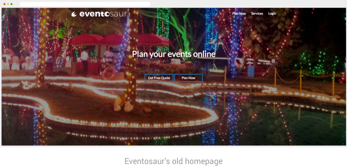
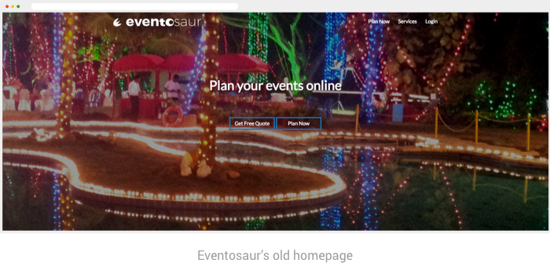
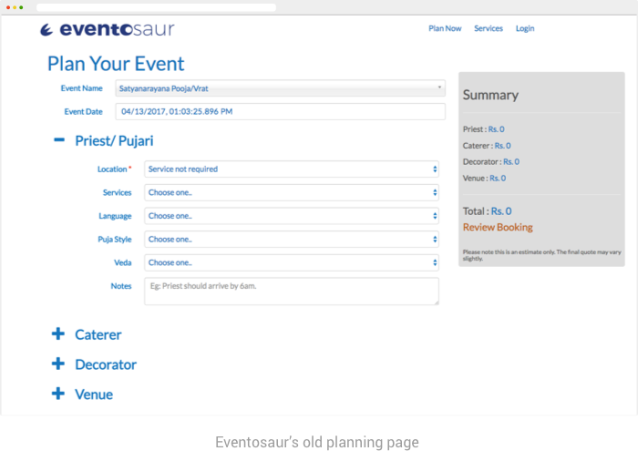
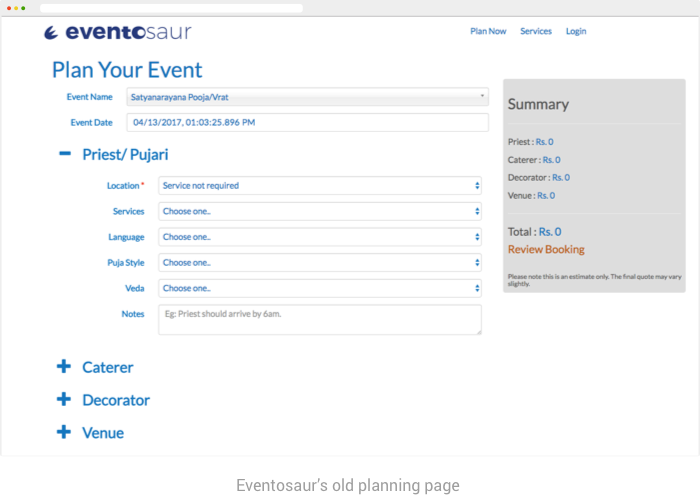

The Story of Eventosaur’s Product Redesign
ROLE
Co-Founder, Lead Product Designer
Service Design | User Research | Low & High - Fidelity Interface Design | Visual Design | Brand & Style-Guide | Prototyping | Usability Testing
Problem Background
In March 2015, I co-founded Eventosaur, a web platform to help people plan their traditional events and find the services they need and thereby reducing the stress involved in planning any big, traditional or religious event.
Our goal was simple: The only thing people should worry about is who they are going to invite. Eventosaur takes care of the rest. By the end of the year we had our website up & running. It did what it was meant to do, but there
was one big issue.
Planning an event from scratch introduced a lot of cognitive overload for Eventosaur's users


Process
After launching the first version of the website, we started conducting usability studies on the website. We also spoke to more than 25 users and conducted interviews to understand their reactions and painpoints. We also observed webpage analytics data
to see the clickthrough rates & mouse-hover hotspots to get an idea of where people were going after landing on the website.
Learnings
Our target users, mostly millennials and people from the tech-industry, weren't too familiar with the cultural nuances of religious events. From the studies we learned that the biggest
pain-points for our users was in the process of planning an event from scratch.
User Flow Revision
From our reserach & usability studies, we learned that even though people had a platform to plan their events, the process of building an event from scratch was making them insecure.

To reduce the stress of planning an traiditonal event from scratch, we decided to change the flow from a DIY to a Package model. By leveraging our domain expertise, we created packages of different price range which would make it easier for the user to make a decision.

Early Explorations
Some of the early designs we explored addressed the user needs in a greater depth. While these designs worked with the new packages idea and built packages for users, the amount of content & control was still making it difficult for our users to find a package they're interested in and make their purchase.
Interaction & Visual Design
Once I knew what the problems & the bottlenecks were, I started working on the re-design. I designed multiple versions of the whole user flow to determine the flow & pattern that would work best for the users. After conducting usability tests on the prototypes, we had a good idea of the flow and patter that worked for our users. Also, since we are a small team, we avoided building everything we wanted to implement in the new design. Instead we decided to take it one step at a time and designed the following screens.
Homepage wizard
In the previous version, users found it hard to enter all event related information in a single page.
Moving the high level information to the homepage considerably reduced
the cognitive overload.
The homepage was also made visually less distracting.
 

Search Results Page
Since every traditional event is unique & requires a specific set of services & procedures, not everyone could easily plan an event from scratch.
With the packages,
users didn’t have to worry about knowing the nuances of the event requirements. The packages include the specific services needed for an event.

{ No Search Results Page In The Old Eventosaur }
Package Details Page
Once users find a package that fits their budget, they can view the entire package in the package details page. The package is pre-built by Eventosaur’s back-end and users
don’t have to build it from scratch. From here, users only have to do minor modifications to the package based on their personal preference.
The change search on top lets users easily make a different search or return to
the package listing page.
 

Brand Style-Guide
I created a brand style-guide to maintain consistency in the product.

Reflection
Learnings
Focusing on user needs
We built our first version as an MVP to put ourselves in the market but it wasn’t very user centered. During this iteration, we were much more focused on building a
product that addressed the user needs and whenever time permitted, I was able to make my team follow the user-centered design process for designing the new version.
Building for a brand
The previous product did not have a strong style-guide when we built it. This time I carefully built the style-guide so that my developer co-founder & I didn’t have any translation issues while developing/designing the product.
Working with a lean team
We were 3 founders with a couple of interns working on this whole product. As a result we had to make certain compromises like the number of tests to conduct
on our prototypes. Also, I had to respect the developer’s abilities & time while designing the interactions. I had to keep my designs manageable for both users to use & the developer to build, thus avoiding feature creep.
Future
While the new version aims to do a lot more than the previous version, there is still a lot we need to test with our users to see the impact the new version has on users’ event shopping behavior.
The current version allows
users to find packages, but they cannot yet modify it online. This was a strategic decision to make the users familiar with the flow without making it too complicated and also to keep our work manageable. The next version would
have an ability to customize the packages & more finer control.
© 2018 Setumadhava Kathawate. All rights reserved.